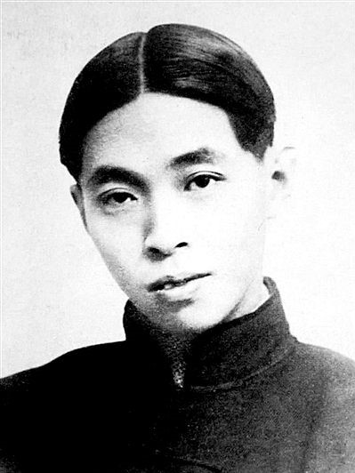

人物专栏 Personage
鲁迅
Lu Xun
鲁迅以笔代戈，奋笔疾书，战斗一生，被誉为“民族魂”。 “横眉冷对千夫指，俯首甘为孺子牛”是鲁迅一生的写照。大多数人认为他文笔犀利、思想深刻，是“新文学”的奠基人。他的小说使用富有创造力的形式对中国人的国民性、中国社会的弊端予以深刻的阐释，是具有批判精神的知识分子；散文诗集《野草》被认为是当时少有的展现出现代主义特质的作品；其杂文，由于特殊的发表环境，在嬉笑怒骂的文字背后蕴含着坚定的政治立场的。这一政治立场带有强烈的个人主义色彩，是鲁迅思想中最为复杂的地方之一。
余秋雨
Yu Qiuyu
余秋雨以历史文化散文而名世。他凭借自己丰厚的文史知识功底，优美的文辞，引领读者泛舟于千年文明长河之中。首部散文集《文化苦旅》依仗着作者渊博的文学和史学功底，丰厚的文化感悟力和艺术表现力所写下的这些文章，不但揭示了中国文化巨大的内涵，而且也为当代散文领域提供了崭新的范例。余秋雨的一系列“文化散文”中，始终贯彻着一个鲜明的主题：对中国历史、中国文化的追溯、思索和反问。
冰心
Bing Xin
冰心的小说，较少宏篇巨著，多是清新隽永的珍品。她的许多作品看起来情节单纯，却寓意深远，留给人无穷的回味。她撷取现实生活中的一个片段，人生旅途中的一段机缘，展示出错综复杂的社会生活的一个侧面。没有离奇曲折的故事，没有金戈铁马的壮举，却具有一种哲理的追求。她常常用机敏的目光，去观察社会，审视人生；从人际关系撞击中，爆发出火花，捕捉生活中蕴藏的哲理，寄托自己的情思，富有清新的哲理和诗意。
巴金
Ba Jin
半个世纪以来，巴金以自己的言论和艺术创作热情地参与中国现代文化建设。巴金还贡献了以“两个一致”的典型化方法和“比较象活人”的性格真实的现实主义美学理论；追求真实，在《随想录》中一遍遍地虔诚而痛苦地忏悔，剖析自己的灵魂，猛烈地批判封建伦理道德、深挖国人灵魂中的奴性，以人格的魅力参与现代伦理文化的建设。
张爱玲
Zhang Ailing
张爱玲是中国现代文学史上一个独具魅力的作家，她一生的创作涉及小说、散文、剧本评论，其中以小说成就最高。张爱玲小说超越了她所处的时代。她的小说无论是选材、立意，还是人物塑造、叙事结构和语言技巧无不显现出个人的特色，取得了较为突出的成就；她的小说无论是超越雅俗，还是对边缘化小人物的深入描写，都是20世纪40年代的其他任何作家无法比拟的。张爱玲贡献了一批文学精品，创造了写实小说的新高，在中国小说史具有坐标的价值。
- 
茅盾
Mao Dun
茅盾创造了现代小说大容量社会信息的传递和辨析的创作模式。茅盾小说注重创作题材和主题的深入挖掘，创造了现代小说与现代社会同步共进的全景化史诗性品格。社会科学家气质的茅盾，由社会活动和文学理论的热情活跃于文坛，这使得他进入创作便达到了空前的思想深度和广阔的历史内涵，他小说的创作题材所涉及的社会生活内容，涵盖了20世纪中国上半叶的历史全貌，时代的线索排列构成了社会的编年史。
三毛
San Mao
三毛是一个用生命去写作的作家,她的散文世界就是她散文化的生命世界,读解三毛散文世界即是读解三毛,散文形式对于三毛来说就是一种生命存在的形式,在这个意义上,三毛的这种“三毛体”的散文具有一种与众不同的特点。三毛散文取材广泛，不少散文充满异国情调，文笔朴素浪漫而又独具神韵，表达了作者热爱人类、热爱生命、热爱自由和大自然的情怀。
徐志摩
Xu Zhimo
徐志摩是一位在中国文坛上曾经活跃一时并有一定影响的作家，他的世界观是没有主导思想的，或者说是个超阶级的“不含党派色彩的诗人”。他的思想、创作呈现的面貌，发展的趋势，都说明他是个布尔乔亚诗人。徐诗字句清新，韵律谐和，比喻新奇，想象丰富，意境优美，神思飘逸，富于变化，并追求艺术形式的整饬、华美，具有鲜明的艺术个性。他的散文也自成一格，取得了不亚于诗歌的成就。